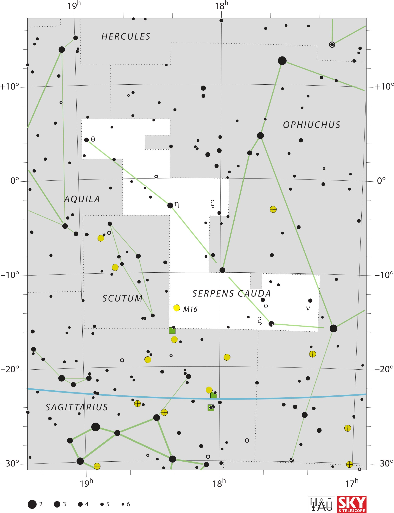

<div data-role="page" id="serpensCauda" data-theme="a">

	<div data-role="header">
		<a href="#home" data-icon="back" data-rel="back">Back</a>
		<h1>Serpens Cauda</h1>
		<a href="#home" data-icon="home">Home</a>
	</div>

	<div data-role="content">
		<div class="cssImageMap">
			


			<a href="../messier/m16.html" class="messier" data-x="870"
				data-y="1550" data-width="160" data-height="70"></a>


			<a href="hercules.html" class="constellation" data-side="left"
				data-x="510" data-y="150" data-width="300" data-height="70"></a>

			<a href="ophiuchus.html" class="constellation" data-side="right"
				data-x="1440" data-y="600" data-width="350" data-height="70"></a>

			<a href="aquila.html" class="constellation" data-side="left"
				data-x="310" data-y="990" data-width="250" data-height="70"></a>

			<a href="scutum.html" class="constellation" data-side="left"
				data-x="500" data-y="1500" data-width="250" data-height="70"></a>

			<a href="sagittarius.html" class="constellation" data-side="left"
				data-x="220" data-y="2060" data-width="400" data-height="70"></a>

		</div>

		<div id="here">
			<h2>Serpens Cauda</h2>

			<p>Image Credit: IAU and Sky & Telescope magazine (Roger Sinnott
				& Rick Fienberg)
		</div>
	</div>
</div>